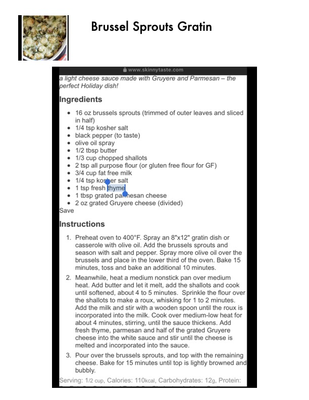

Brussels Sprouts Gratin

Original cookbook page 117
A light cheese sauce made with Gruyère and Parmesan – the perfect Holiday dish! From www.skinnytaste.com. Rich and creamy comfort side dish.
Prep: 15 minutes • Cook: 40 minutes • Total: 55 minutes
Ingredients
- 16 oz brussels sprouts (trimmed of outer leaves and sliced in half)
- ¼ teaspoon kosher salt
- Black pepper to taste
- Olive oil spray
- ½ tablespoon butter
- ⅓ cup chopped shallots
- 2 teaspoons all purpose flour (or gluten free flour for GF)
- ¾ cup fat free milk (may need more for desired consistency)
- ¼ teaspoon kosher salt
- 1 teaspoon fresh thyme
- 1 tablespoon grated parmesan cheese
- 2 oz grated Gruyère cheese, divided
Instructions
- Preheat oven to 400°F. Spray an 8"×12" gratin dish or casserole with olive oil.
- Add the brussels sprouts and season with salt and pepper. Spray more olive oil over the brussels and place in the lower third of the oven.
- Bake 15 minutes, toss and bake an additional 10 minutes.
- Meanwhile, heat a medium nonstick pan over medium heat. Add butter and let it melt, add the shallots and cook until softened, about 4 to 5 minutes.
- Sprinkle the flour over the shallots to make a roux, whisking for 1 to 2 minutes.
- Add the milk and stir with a wooden spoon until the roux is incorporated into the milk. Cook over medium-low heat for about 4 minutes, stirring, until the sauce thickens.
- Add fresh thyme, parmesan and half of the grated Gruyère cheese into the white sauce and stir until the cheese is melted and incorporated into the sauce.
- Pour over the brussels sprouts, and top with the remaining cheese.
- Bake for 15 minutes until top is lightly browned and bubbly.
📝 Recipe Notes
SAUCE TIP: If using 1% milk, sauce may be very thick. Add more milk and water to make it pourable if needed. Adjust liquid to desired consistency. 110 kcal per ½ cup serving, 12g carbohydrates. Combined recipe from pages 117-118.
Recipe #117 from collection